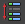

可以在网格上创建遮罩，它允许您仅绘制特定顶点，并阻止所有其他顶点接收权重。
绘制蒙皮权重时创建遮罩
- 选择平滑边界网格并打开“绘制蒙皮权重工具”(Paint Skin Weights Tool)。
- 将“模式”(Mode)设置为“绘制选择”(Paint Select)。
- 绘制以仅选择要对权重保持开放的顶点，然后切换模式到“绘制”(Paint)。
-
当继续绘制权重时，仅选定的顶点可以接收权重值，所有其他顶点会被遮罩。
提示：
若要在下列步骤中在“绘制选择”(Paint Select)和“绘制”(Paint)模式之间切换，请使用热键  + > 和
+ > 和  + < 向右或向左更改模式。
+ < 向右或向左更改模式。
提示： 若要快速锁定除一些影响之外全部影响的权重，请选择需要的影响，单击“反选”(Invert Selection)  以选择所有其他影响，然后在任意选定影响上单击锁定按钮  。所有选定影响的权重将锁定，并允许您仅为这些原始影响绘制权重。请参见锁定平滑蒙皮权重。
。所有选定影响的权重将锁定，并允许您仅为这些原始影响绘制权重。请参见锁定平滑蒙皮权重。